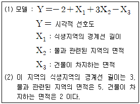
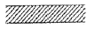
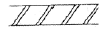
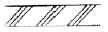
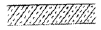
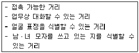
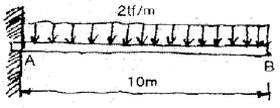
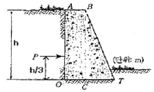
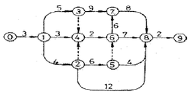

조경기사 (2008-03-02 기출문제)
1과목: 조경사
1. 영국의 Landscape Carding School에 관련된 설명으로 틀린 것은?
- 경관효과표출기법에는 beauti effect와 picturesque effect가 있다.
- Pu ckler-Muskau와 F.L.Olmsted에 강한 영향을 미쳤다.
- 인간거주와 관계 깊은 건축적 지역과 널리 퍼진 자연관의 관계 성확립에 뚜렷한 업적을 남겼다.
- 영국의 전원풍경을 만들기 위한 바탕이 되었다.
(정답률: 38%)

2. 일본 헤이안(平安)시대는 정토(淨土)신앙 사상이 정원과 건축에 영향을 미쳤다. 이러한 사상을 나타낸 대표적인 것은?
- 천용사(天龍寺), 서방사(西芳寺)
- 금각사(金閣寺), 은각사(銀閣寺)
- 용안사(龍安寺), 대덕원(大德院)
- 모원사(毛越寺), 무량광원(無量光院)
(정답률: 60%)
3. 고려시대의 궁 중 특히 풍수지리설의 영향으로 인해 자연풍경이 수려한 곳에 주위 경관과 조화되도록 자연을 그대로 이용하여 꾸며진 곳은?
- 중미정
- 장원정
- 만춘정
- 연복정
(정답률: 56%)
4. 다음 중 중세 장원제도(feudal system)속에서 발달된 조경 양식의 특징은?
- 내부공간 지향적 정원 수법
- 로마시대의 공지 형태 답습
- 성벽을 의식한 장대한 외부 경관의 조성
- 풍경식의 도입
(정답률: 86%)
5. 다음 중 일부 무로마찌시대의 축산고산수 수법으로 축조된 대표적 정원은?
- 대선원 서원
- 삼보원
- 용안사 석정
- 천룡사
(정답률: 55%)
6. 소쇄원에는 다양한 식물이 도입 되어 있었음을 김인후의 소쇄원 48명과 그 밖의 몇 가지 시문을 통해서 알 수 있다. 소쇄원에 심어진 식물 중 국내 야생종 이었던 것은?
- 버드나무
- 벽오동나무
- 복숭아나무
- 살구나무
(정답률: 57%)
7. 정원 공간을 원로나 혹은 수로에 의해 기하학적으로 4등분 하여 만들어지지 않은 곳은?
- 성(聖) 갤수도원의 클로이스트 가든
- 폼페이 티베르티누스의 정원
- 이란 이스파한의 전형적인 정원
- 인도 캐시미르의 샬리마르 바그
(정답률: 34%)
8. 조선시대 강희안이 조경식물에 대한 양화소록(養花小錄)을 저술하였 는데 "양화(養花)"가 의미하는 것은?
- 그 당시 원예에 대한 관심을 기록
- 그 당시 화목에서 뜻을 찾고 수심양성(수심양성)하려는 목적으로 기록
- 그 당시 풍수와 관련된 배식기법을 수록
- 그 당시 화목의 종류를 후세에 전할 목적으로 기록
(정답률: 74%)
9. 문화재와 같이 인간의 생존환경을 주체로 하는 환경대책으로 적합한 용어는?
- 보호(protection)
- 보전(conservation)
- 보존(preservaton)
- 지속(sustenance)
(정답률: 83%)
10. 유럽 낭만주의 시대의 풍경식 조경은 동양의 이국적 취향을 불러 일으켰다. 영국의 큐 가든(Kew garden)에 중국식 풍경을 가장 잘 나타 내게 한 대표적인 첨경물은?
- 암석
- 탑
- 교량
- 석등
(정답률: 75%)
11. 르 노트르 정원을 구성 할 때 여러 가지 화단으로씨 화려하게 장식하였다. 그 가운데 회양목으로만 대칭형 무외를 만드는 화단의 명칭은?
- 대칭화단
- 자수화단
- 영국화단
- 구획화단
(정답률: 37%)
12. 한국정원의 가장 올바른 감상법은?
- 시각적으로 감상
- 청각적으로 감상
- 시청각적으로 감상
- 오감으로 감상
(정답률: 59%)
13. 풍경식정원의 변화과정을 보여주는 사례로 베르사유궁전과 같이 절대적 군주의 위엄을 나타내는 환경을 겨냥하였지만 자유주의적인 ‘의그(whig)당’의 사상을 표현한 사례는?
- 쁘띠트리 아농(Petit Trianon)
- 스투어헤드(Stourhead)
- 스토우 가든(Stowe Garden)
- 블랜하임(Blenheim)
(정답률: 35%)
14. 수도원 정원에서 두 개의 직교하는 원로의 교차점을 가리키는 것은?
- 바(Bagh)
- 페리스틸리움(Peristylium)
- 트렐리스(Trellis)
- 파라리소(Paradiso)
(정답률: 64%)
15. 프랑스 르 노트르식 정원의 총림(bosquet) 유형 중 잔디밭 가운데에 수목이 V자형으로 식재 된 것은?
- 브란 그란
- 성형총림
- 구획총림
- 5점형총림
(정답률: 66%)
16. 동양 조경공간 속에 만들어졌던 유상곡수연시설(流觸曲水宴施設)과 관련이 없는 것은?
- 포석 정지(飽石亭地)
- 왕희지(王養之)의 난정기 서문(蘭亭記 序文)
- 술잔을 띄워 흐르게 한 유배거(流盃渠)
- 소쇄원(據灌團)의 조담(措悽)
(정답률: 78%)
17. 일본의 모모야마(한문)시대에 발달한 다정의 시설물이 오늘날 일본 정원의 점경물로 널리 쓰이는 것은?
- 석등과 세심석
- 수수분과 석등
- 삼존석과 석탑
- 음양석과 석등
(정답률: 67%)
18. 우리나라 정원의 석가산 기법에 대한 설명 중 틀린 것은?
- 지형의 변화를 얻기 위한 기법이다.
- 고려시대부터 사용되어진 우리나라 특유의 정원기법이다.
- 주로 흙이나 돌로 쌓아 만들었다.
- 첩석성산(壘石成山)도 석가산의 일종이다.
(정답률: 66%)
19. 다음 일본정원과 관련된 내용 중 연결이 틀린 것은?
- 용안사(龍安寺) - 평정고산수(平庭枯山水)
- 다정(茶庭) - 모모야마시대(挑山時代)
- 서방사(西芳寺) - 몽창국사(夢窓國師)
- 계리궁(桂離宮) - 무로마치시대(室町時代)
(정답률: 56%)
20. 고려시대 궁궐의 정원을 지칭한 용어는?
- 비원
- 북원
- 정원
- 금원
(정답률: 58%)
2과목: 조경계획
21. 조경의 대상 중 포괄적 의미의 도시공원녹지(Urban open space)에 직접적으로 포함되지 않는 경우는?
- 도시(보행)광장
- 공원도로, 보행자 전용도로
- 시설녹지, 경관녹지
- 자연공원
(정답률: 74%)
22. 프로그램(program)의 설명으로 부적합한 것은?
- 프로그램은 계획 및 설계를 위한 전제 조건의 일부가 된다
- 프로그램은 의뢰인이 제공할 수도 있으며, 필요에 따라서는 조경가가 작성할 수도 있다.
- 프로그램은 조경가와 의뢰인의 대화 혹은 전문적 연구를 통하여 작성 된다.
- 프로그램은 프로젝트에서 기본목표의 상위 개념이 되며 프로그램에 의하여 기본 목표가 설정된다.
(정답률: 70%)
23. 출입구가 2개 이상일 때 차로의 너비가 가장 큰 주차 형식은?
- 평행주차
- 직각주차
- 교차주차
- 60˚ 대향주차
(정답률: 33%)
24. 다음 중 자연공원법령에서 정하는 공원시설의 종류 및 분류가 틀린것은?
- 공원관리사무소, 탐방안내소 등의 공공시설
- 스키장, 골프장 등의 휴양 및 편의시설
- 방화 ㆍ 방책 등 담방자의 안전을 도모하는 보호 및 안전시설
- 탐방로, 주차장 등의 교통ㆍ운송시설
(정답률: 47%)
25. 동일한 모재로부터 형성된 토양이며, 지명에 따라 명명한 토양분류는?
- 토양군(soli association)
- 토양구(soli type)
- 토양통(soli series)
- 토양상(soli individual)
(정답률: 32%)
26. 주택단지의 밀도 중 주거목적의 주택용지만을 기준으로 한 것을 무엇이라 하는가?
- 총밀도
- 순밀도
- 용지밀도
- 근린밀도
(정답률: 70%)
27. 연간 이용자 수가 895000명 이며, 최대일 이용자가 36500명 이라고할 때 최대일률을 감안한 계절형은 다음 중 어디에 해당하는가? (단, 1계절형:1/30, 2계절형:1/40, 3계절형:50/1, 4계절형:1/100)
- 1계절형
- 2계절형
- 3계절형
- 4계절형
(정답률: 57%)
28. 도시계획지역내 지정된 어린이공원의 면적과 유치거리 기준으로 옳은것은?
- 면적 : 1500m2 이상, 유치거리 : 250m이하
- 면적 : 2000m2 이상, 유치거리 : 300m이하
- 면적 : 2500m2 이상, 유치거리 : 350m이하
- 면적 : 3000m2 이상, 유치거리 : 400m이하
(정답률: 53%)
29. 도시공원 및 녹지 등에 관한 법령상 소공원 및 어린이공원등의 공원조성계획의 정비를 요청할 수 있는 주민의 요건으로 맞는 것은?
- 공원구역 경계로부터 500미터 이내에 거주하는 주민 250명 이상의요청
- 공원구역 경계로부터 300미터 이내에 거주하는 주민 300명 이상의요청
- 공원구역 경계로부터 250미터 이내에 거주하는 주민 500명 이상의요청
- 공원구역 경계로부터 200미터 이내에 거주하는 주민 700명 이상의요청
(정답률: 67%)
30. 휴게시설 중 벤치의 배치는 소시오페털(sociopetal)한 형태를 위하여야 하는데, 그것은 다음 인간의 욕구 중 어디에 해당 하는 가?
- 사회적인 욕구
- 장식에 대한 욕구
- 개인적인 욕구
- 안정에 대한 욕구
(정답률: 58%)
31. 레크리에이션 계획의 접근방법에 대한 설명 중 맞는 것은?
- 자원형 접근방법은 한계수용력과 환경영향을 지표로 한다.
- 형래형은 과거의 참여패턴이 장래의 기회를 결정한다는 것은 전제로 한다
- 활동형은 대도시 또는 지역레벨의 대상지에 적용하는 기법이다
- 경제형은 이용자 선호도와 만족도가 지표이다.
(정답률: 59%)
32. 자연공원법상의 공원기본계획 미치 공원계획에 관한 내용 중 틀린것은?
- 공원기본계획의 내용 및 절차 기타 필요한 사항은 대통령령으로 정한다.
- 환경부장관은 10년마다 국립공원위원회의 심의를 거쳐 공원기본계획을 수립하여야 한다.
- 공원관리청은 15년마다 지역주민, 전문가 기타 이해관계자의 의견을 수렴하여 공원계획의 타당성 여부를 정토하고 그 결과를 공원계획의 변경에 반영하여야 한다.
- 도립공원에 관한 공원계획은 시ㆍ도지사가 결정한다.
(정답률: 68%)
33. 우리나라 도시공원 및 녹지 등에 관한 법률에서 분류된 도시공원의 분류가 아닌 것은?
- 문화공원
- 종합운동공원
- 소공원
- 역사공원
(정답률: 52%)
34. 도시공원 및 녹지 등에 관한 법률의 광역권 근린공원이 그 기능을 충분히 발취 할 수 있는 장소의 설치 규모 기준은?
- 1만 제곱미터
- 10만 제곱미터
- 50만 제곱미터
- 100만 제곱미터
(정답률: 54%)
35. 환상방사형 녹지가 많은 계획가들에 의하여 선호되는 이유로 합당하지 않은 것은?
- 인공과 자연의 조화가 우수하다.
- 시미니이 쉽게 녹지에 도달할 수 있다.
- 도시의 발전에 질서와 탄력성을 부여한다.
- 어느 도시나 쉽게 조성할 수 있다
(정답률: 56%)
36. 주택건설기준 등에 관한 규정의 어린이놀이터에 관한 설명중 틀린것은?
- 100세대 미만의 주택을 건설하는 주택단지에는 매 세대당 3제곱미터의 비율로 산정한 면적으로 한다.
- 100세대 이상의 주택을 건설하는 주택단지에는 300제곱미터에 100세대를 넘는 매 세대마다 1제곱미터를 더한 면적으로 한다.
- 어린이놀이터는 어린이의 이용에 편리하고 일조가 양호한 곳에 배수에 지장이 없도록 설치하되 그 1개소의 면적은 250제곱미터이상 이어야 한다.
- 어린이놀이터는 그 폭을 9미터(면적이 150제곱미터 미만일 경우에는 6미터)이상으로 하여야 한다.
(정답률: 50%)
37. 주어진 시각적 선호모델과 독립변수들의 왔을 사용한 특정지역의 시각적 선호도 값은?

- 4
- 6
- 10
- 14
(정답률: 70%)
38. 주택건설기준 등에 관한 규정 중 공동주택을 건설하는 주택단지에는 폭 몇 미터 이상의 도로를 설치하여야 하는가?
- 4미터
- 6미터
- 8미터
- 12미터
(정답률: 64%)
39. 주거단지 계획에 쿨데삭(cul-de-sac)도로를 도입시 가장 큰 장점은?
- 막힘없는 도로망 구축이 가능하다.
- 자동차 소음을 차단할 수 있다.
- 자동차의 위험이 없는 녹지를 확보 할 수 있다.
- 도로의 길이를 줄일 수 있다
(정답률: 63%)
40. 자연공원법에 명시된 자연공원의 용도지구가 아닌 것은?(오류 신고가 접수된 문제입니다. 반드시 정답과 해설을 확인하시기 바랍니다.)
- 자연 보존지구
- 자연 환경 지구
- 집단 시설 지구
- 자연개발 지구
(정답률: 60%)
3과목: 조경설계
41. 장애인 및 노약자들이 이용할 수 있는 경사로의 설계 기준중 부적합한 것은?
- 장애인 등의 통행이 가능한 경사로의 기울기는 1/18을 넘지 않아야 한다.
- 연속 경사로의 길이 20mk다 1.0m x 1.0m 이상의 수평면으로 된 참을 설치할 수 있다.
- 철체어 사용자가 통행할 수 있도록 경사로의 유효폭은 120cm 이상으로 한다.
- 바닥표면은 미끄럽지 않은 재료를 채용하고 평탄한 마감으로 한다.
(정답률: 67%)
42. 양 종단의 표고차 5m인 구간에 있어 자전거 도로의 오르막 최대 경사(7%)를 적용하면 그 수평 길이는 어느 정도가 가장 바람직한가?
- 약 70m
- 약 60m
- 약 50m
- 약 40m
(정답률: 52%)
43. 피보나치(fibonacci)급수에 대한 사항으로서 틀린 것은?
- 기원전에 이집트의 수학자가 발견했다.
- 1,1,2,3,5,6,13,21,34‥‥등 으로 전개된다
- 인접하는 2개의 항 중에서 뒤의 항을 앞의 항으로 나누면 숫자가 클수록 황금비에 가까워진다.
- 많은 생물계에 이와 같은 비례가 존재한다.
(정답률: 53%)
44. 다음 투시도의 성격에 대한 설명 중 틀린 것은?
- 같은 크기의 수평면이라도 보이는 면의 폭은 시점의 높이에 가까워 질수록 넓게 보인다.
- 화면에 평행하지 않는 선들은 소점으로 모이게 된다.
- 소점은 항상 관측자의 눈높이의 수평선상에 놓이게 된다.
- 화면보다 앞에 있는 물체는 실체보다 확대되어 나타난다.
(정답률: 40%)
45. 경관을 구성하는 데 있어 지배적인 우세요소가 아닌 것은?
- 형태
- 선
- 색채
- 축
(정답률: 64%)
46. 칼 융(Carl Gustav Jung)이 말한 “인간의 집단적 잠재의식과 보편적 원형(universal archetypes)의 동질성“에 대한 설명으로 틀린 것은?
- 지리와 역사적으로 아무런 관계가 없는 곳에서 유사한 상징이 사용되고 있다
- 인간의 정신은 의식적 마음과 집단석 무의식 2가지로 구성되어 있다.
- 보편적 원형은 인간에게 공통적인 삶과 죽음 같은 원초적이며 보편적 경험에 토대를 둔 것이다.
- 원형적 형태인 정사각형은 땅, 원은 하늘을 의미하는 인식론은 동ㆍ서양에서 공통적으로 인정되어 왔다
(정답률: 41%)
47. 도면 표시 방법 중 일반적으로 사용하는 가공석레의 마감 표시 방법은?




(정답률: 55%)
48. 설계시 녹지 식재면의 표면배수 기울기로 가장 적합한 것은?
- 1/10~1/20 정도
- 1/20~1/30 정도
- 1/30~1/40 정도
- 1/40~1/50 정도
(정답률: 30%)
49. 날이 어두워지면 명소시와 암소시 중간 정도의 밝기에서 추상체와 간상체 양쪽 모두가 작용하게 되는 시각 상태를 무엇이라고 하는가?
- 색순응
- 암순응
- 박명시
- 항상성
(정답률: 48%)
50. 일반적으로 구분하는 투시도의 종류로 볼 수 없는 것은?
- 유각투시도
- 경사투시도
- 입체투시도
- 평행투시도
(정답률: 28%)
51. 포장설계와 관련한 다음 설명 중 틀린 것은?
- 콘크리트 경계블록은 KS 규정에 의해 경계블록 종류별로 적합한 휨강도와 5%이내의 흡수율을 가진 제품이어야 한다.
- 보도용 포장은 미끄럼을 방지하면서도 걷기에 적합할 정도의 거친면을 유지해야 한다.
- 보도용 포장면의 횡단경사는 배수처리가 가능한 방향으로 6%를 표준으로 한다.
- 투수성 포장인 경우에는 횡단경사를 주지 않을 수 있다.
(정답률: 43%)
52. 다음 색체 용어 중 밸류 키(Value Keys)가 가리키는 것은?
- 채도단계
- 색상단계
- 명도단계
- 유채색단계
(정답률: 27%)
53. 다음 중 가는 파선 또는 굵은 파선의 사용 용도로 가장 적합한 것 은?
- 외형선
- 숨은선
- 중심선
- 가상선
(정답률: 52%)
54. 다음 거리와 식별 정도를 구분하는 기준으로 각각 적합하게 구성된 것은?

- 1~3m, 2.4m, 12m, 135m
- 1~3m, 5.5m, 50m, 135m
- 0.5~2m, 15m, 50m, 1200m
- 0.5~2m, 15m, 135m, 1200m
(정답률: 64%)
55. Berlyne의 미적반응 과정 순서로 옳은 것은?
- 환경적 자극 → 자극탐구 → 자극선택 → 자극해석 → 반응
- 환경적 자극 → 자극해석 → 자극선택 → 자극탐구 → 반응
- 환경적 자극 → 자극선택 → 자극탐구 → 자극해석 → 반응
- 환경적 자극 → 자극선택 → 자극해석 → 자극탐구 → 반응
(정답률: 60%)
56. 시각적 의사전달체계(graphic communication system)수립시 유의할 사항이 아닌 것은?
- 안내판의 설치장소 선정 및 방향결정은 매우 중요하다.
- 보행자 안내체계와 자동차 안내체계는 분리하는 것이 바람직하다.
- 부분적으로 적합한 글씨체, 상징적 도안 등이 필요하다.
- 의사전달 방법에 있어서 단어, 상징적 도안, 색체, 질감 등은 모두 중요한 요소들이다.
(정답률: 35%)
57. 도로설계에서 곡선부의 선형은 보통 원곡선을 사용한다. 다음중 원곡선의 종류가 아닌 것은?
- 단곡선(Simple curve)
- 3차 포물선(parabola)
- 배향곡선(Re-verse cuwe)
- 반향곡선(Hair-pin curue)
(정답률: 63%)
58. 오른손을 쓰는 설계자가 제도판 및 제도 책상 위에 일반적으로 놓는 제도용구의 설명으로 틀린 것은?
- 눈금자, 삼각자 등은 오른쪽에 가깝게 놓는다
- 오른손으로 쓰는 것은 오른쪽에 놓는다.
- 왼손을 쓰는 것은 왼쪽에 가깝게 놓는다.
- 컴퍼스, 디바이더 등은 오른쪽에 가깝게 는다
(정답률: 44%)
59. 도시경관 구성원리중 여기, 저기(Here and There)라는 개념이 있다. 아래의 공간구성 원칙 중 가장 가까운 것은?
- 연속성 (Sequence)
- 반복(Repeatition)
- 조화(Harmony)
- 통일(Unity)
(정답률: 48%)
60. 다음 그림은 도로가에 있는 안전표지이다. 바탕색으로 가장 적당한 것은?
- 노랑색
- 초록색
- 파랑색
- 보라색
(정답률: 70%)
4과목: 조경식재
61. 다음 중 자연 풍경식 식재의 기본 양식으로 맞지 않는 것은?
- 교호식재
- 램덤식재
- 부등변 삼각형 식재
- 군식
(정답률: 61%)
62. 다음 중 도로의 절사면이나 식생의 상부로부터 하부로의 변화에 가장 적합한 조사법은?
- 방형구법
- 대상구법
- 접선법
- 원형구법
(정답률: 29%)
63. 다음 수목 중 차폐 식재용 수목으로 부적합한 것은?
- Zizyphus jujube
- Taxus cuspidata
- Thuja or ientalis
- Ligustrum obtusifolium
(정답률: 29%)
64. 다음 중 한성(限性) 또는 능성(龍性) 음지식물(바地植油)이 아닌 수종들만 나열된 것은?
- 단풍나무, 참나무, 너도밤나무
- 가문비나무, 전나무, 보리수나무
- 주목, 측백나무, 비자나무
- 자작나무, 낙엽송, 버드나무
(정답률: 39%)
65. 뾰족한 산 정상에 식재할 때 가장 잘 조화가 되는 수목의 형태는?
- 둥근 형태의 수관을 가진 수목
- 위로 치솟는 형태의 수관을 가진 수목
- 불규칙 형의 수관을 가진 수목
- 원개형(圖蓋形)의 수관을 가진 수목
(정답률: 46%)
66. 다음 수목 중 소나무류(pinus)에 속하지 않는 것은?
- 잣나무
- 스트로브 잣나무
- 백송
- 금송
(정답률: 40%)
67. 잔디 식재 공법으로 공사기간의 단축이 용이하고, 광대한 면적에 빠른 시공이 가능한 공법은?
- 평떼공법
- 종자살포공법
- 줄떼공법
- 종자판붙임 공법
(정답률: 5%)
68. 나무를 이식하기 위하여 뿌리분을 뜨려고 한다 근원 직경이 25cm 일때 근원간주(程元幹周)로부터 뿌리분 가장자리까지의 거리는 얼마로 해야 하는가? (단, 상수는 4로 한다.)
- 43.5cm
- 68.5cm
- 112.0cm
- 136.0cm
(정답률: 12%)
69. 다음 비오톱에 관한 설명 중 틀린 것은?
- 도시(농촌) 비오톱 지도는 도시(농촌)경관생태계획의 핵심적 기초자료이다.
- 도시 비오톱은 생물 서식 공간을 의미하기도 한다.
- 도시 비오톱은 도시인에게 중요한 휴양 및 자연체험 공간을 제공해 준다.
- 벽면 녹화 및 옥상정원 등은 소규모 비오톱 공간으로 볼수 없다.
(정답률: 49%)
70. 산울타리용으로 개나리, 사철나무, 히말라야시이다 등이 갖는 공통적인 특징은?
- 대기 오염물질을 잘 흡수한다.
- 척박한 토양에서 잘 생육한다.
- 방화식재용 수종으로 잘 이용된다.
- 높은 주파수의 소음을 잘 흡수한다.
(정답률: 29%)
71. 꽃은 총상화서로 1년에 2회 피지만 봄철의 꽃은 열매를 맺지 못한다. 또한 가지는 가늘고 길어서 밑으로 축 쳐지며 잎이 부드러운 침형인 수종은?
- Pinus koraiensis S. et Z.
- Ternotroemia japonica Thunb
- Tamarix chinensis Lour.
- Abies hollophylla Max.
(정답률: 45%)
72. 다음 중 침엽수인데 잎이 낙엽되는 수종으로만 나열된 것은?
- Metasequoia glyptostroboides, Cedrus deodara
- Ginko biloba, Cephalotaxus Koreana
- Taxodium distichum, Larix kaempferi
- Chamaecyparis pisifera, Picea abies
(정답률: 53%)
73. 다음 Juniperus 속 중 침엽이 없고, 벽면의 강한 반사열에 견디는 힘이 강하여 벽면식재에 주로 사용되는 수종은?
- J. virginlana L.
- J. chinenesis var. kaizuka Hort.
- J. chinenesis var. procumbens Endl.
- J. rigida S.et Z.
(정답률: 48%)
74. Magnolia 속의 재배적 특성 설명으로 가장 부적합한 것은?
- 뿌리가 유연하여 강한 답압을 피해야 한다.
- 약산성토양을 좋아한다.
- 근계경쟁으로 단식(單植)을 해야 한다.
- 전정을 자주 해야 수형이 좋아진다.
(정답률: 45%)
75. 노각나무의 학명으로 바르게 표기된 것은?
- Koreana stewartia
- Stewartia koreana
- Korean stewartia
- Stewartia korean
(정답률: 68%)
76. 개화하는 순서대로 옳게 배열된 것은?
- Forsyhia Koreana → Campsis grandiflora →Lindera obtusil oba
- Cornus Kousa → Punica granatum → Malus floribunda
- Magnolia grandififlora → Syringa dilatata → Prunusmume
- Hamamelis japonica → Forsyhia Koreana →Hibiscus syriacus
(정답률: 40%)
77. 일반적으로 식물의 생육에 유효한 수분인 모관수(毛管水)의 pF 범위는?
- pF 1.2~2.0
- pF 2.0~2.5
- pF 2.7~4.5
- pF 4.7~7.5
(정답률: 58%)
78. 비탈면(法面)의 경사도에 대한 설명으로 틀린 것은?
- 수목을 식재할 때 판목은 1:2 보다 완만하게 한다.
- 수목 식재식 소교목은 1:3 보다 완만하게 한다.
- 절토시 모래로 안정화 할 때는 1:0.5보다 적은 것이 적합하다.
- 성토한 곳의 안정은 1:1.5가 적합하다.
(정답률: 29%)
79. 가을에 다른 나무에 비해 비교적 일찍 붉게 단풍이 들고 내음성이 있어 교목하에 군식이 용이하고, 옻나무과이나 옻을 탈 염려가 없어 정원에 심어 계절감을 느낄 수 있는 수종은?
- Cotinus coggygr ia ScoP.
- Rhus verniciflua Stokes
- Rhus chinensis Mill.
- Rhus ambigua Lavalle
(정답률: 36%)
80. 수목 굴취시 천근성 나무의 분의 모양은?
- 보통분
- 접시분
- 조개분
- 혼합분
(정답률: 49%)
5과목: 조경시공구조학
81. 조적공사에서 벽돌의 종류와 쌓기 방법에 EKfms 수량(m2당) 기준으로 틀린 것은?
- 기존형 벽돌(0.5B): 65장
- 표준형 벽돌(0.5B): 75장
- 기종형 벽돌(1.0B):130장
- 표준형 벽돌(1.0B):155장
(정답률: 69%)
82. 특명입찰(수의계약, indinidual negotiation)을 요하는 공사가 아닌 것은?
- 실비 청산 보수 공사
- 특수 공법을 요하는 공사
- 추가공사
- 도급업자의 선정의 여지가 있을 때
(정답률: 66%)
83. 다음 그림과 같은 캔틸레버보 AB에 2tF/m의 등분포하중이 최대휨모멘트 값MB는?

- 50 tfㆍm
- 100 tfㆍm
- 200 tfㆍm
- 400 tfㆍm
(정답률: 27%)
84. 다음 토적 계산 방법들 중 가장 오차가 적은 것은?
- 양단면평균법
- 중앙단면법
- 각주공식에 의한 방법
- 점고법에 의한 방법
(정답률: 61%)
85. 콘크리트 타설 작업 후 발생하는 블리딩(bleeding)현상의 설명으로 옳은 것은?
- 시멘트 입자의 비율이 높아 점성이 증가하므로 타설 작업에 지장을 초래하는 현상
- 굳지 않은 상래에서 시멘트 입자의 점성에 의한 재료 분리에 저항하는 성질
- 시멘트의 화학적 작용으로 인한 골재의 혼합 및 타설 작업에 지장을 초래하는 현상
- 굳지 않은 상래에서 골재 및 시멘트입자의 침강(沈降)으로 물과 가벼운 입자가 분리하여 상승하는 현상
(정답률: 57%)
86. 그림과 같은 상재하중이 없는 중력식옹벽이 작용하는 토압은? (단, 무근콘크리트 중량 : 2300kgf/m3, 보통흙의 중량 1300kgf/m3, h : 2.5m, 토압계수 : 0.286으로 한다.)

- 약 2⑤5.6kgf/m
- 약 1161.9kgf/m
- 약 5987.2kgf/m
- 약 3384.1 kgf/m
(정답률: 48%)
87. 도로설계에서 원곡선을 설치할 때 원곡선에 2개의 점선이 교점B에서 교차 한다. 접선 AB의 방위는 N6O˚ 25'E 이고, 접선 CB의 방위는 S45˚ 10'E일 때 교각은? (단, A는 곡선의 시점, C는 곡선의 종점이다.)
- 15˚ 10'
- 74˚ 25'
- 1⑤˚ 35'
- 15˚ 35'
(정답률: 39%)
88. 물이 흐르는 도수로의 횡단면을 설명한 것 중 틀린 것은?
- 수로를 흐름의 방향에서 직각으로 끊었을 경우, 그 수로의 단면적을 수로담면이라 한다.
- 수로단면 중 유체(流體)가 점유하는 부분에 의해 만들어진 단면을 유적(流積)또는 유수단면적이라 한다.
- 수로의 한 단면에 있어서 물이 수로의 면과 접촉하는 길이를 윤변(潤邊)이라 한다.
- 수로의 한 단면에서 윤변을 유적으로 나눈 값을 경심(經深)또는 수리평균심이라 한다.
(정답률: 55%)
89. 석재의 다듬기 마무리 표면처리방법으로서 쇠메(쇠망치)로 쳐서 다듬는 거친 질감의 표면처리는?
- 잔다듬
- 정다듬
- 도드락다듬
- 혹두기
(정답률: 41%)
90. 조명시설의 용어 중 단위 면에 수직으로 투하된 광속밀도를 가르키는 용어는?
- 광도(luminous intensity)
- 조도(illimination)
- 휘도(brightess)
- 배광곡선
(정답률: 66%)
91. 다음 중 할증에 관한 설명으로 옳은 것은?
- 표준품셈에 수록된 조경용 수목 할증률은 5%이다
- 표준품셈에 수록된 재료 할증률은 최소치이므로 그이상 작용한다.
- 시공품은 재료 할증을 포함한 총 재료량에 표준품용하여 계산한다
- 재료할증은 재료의 운반, 가공, 시공과정 등에서 하는 손실량을 예측하여 부과하는 것이다
(정답률: 50%)
92. 비철 재료중 고온저항이 크며 내해수성이 우수하고 염산, 유산, 초산에 대한 저항과 강도의 중 대비가 금속공업재료 중 가장 크며 비중이 약 4.5인 재료는?
- 니켈
- 티타늄
- 아연
- 주석
(정답률: 54%)
93. 쌓기 단수는 쌓을 수 있는 최대로 할 때, 시멘트 500포대를 저장할수 있는 가설창고의 필요 면적으로 옳은 것은?
- 15.4m2
- 18.5m2
- 20.4m2
- 23.4m2
(정답률: 38%)
94. 물체에서 작용하는 크기가 같고 방향이 반대인 평행한 힘을 가리키는 것은?
- 전단
- 우력
- 반력
- 좌굴
(정답률: 33%)
95. 다음 중 시공관리의 3대 목표가 아닌 것은?
- 공정관리
- 종합관리
- 품질관리
- 원가관리
(정답률: 57%)
96. 공사 발주처에서 작성되는 다음의 공사 원가계산 항목 경비에 속하지 않는 것은?
- 연구개발비
- 수도광열비
- 세금 및 공과금
- 소모공구 비품비
(정답률: 41%)
97. 살수관개에 관한 사항 중 옳은 것은?
- 살수란 식물의 뿌리 부근까지 인공적으로 물을 유입시키는 작업이다.
- 균등하게 살수하는 것보다는 살수직경을 크게 하는 것이 중요하다.
- 살수되는 물이 떨어지는 구역을 중복시켜서는 안된다.
- 살수기의 배치는 정삼각형이나 정사각형이 기본형이다.
(정답률: 57%)
98. 수화열이 낮고 수축량이 적으며, 내황산염성이 풍부한 시멘트로 침식성 용액에 대한 저항이 크며, 내구성이 풍부하여 포장이나 댐 같은 매스(mass)콘크리트, 차페용 콘크리트 등에도 사용되는 것은?
- 고로시멘트
- 조강포틀랜드시멘트
- 중용열포틀랜드시멘트
- 백색포틀랜드시멘트
(정답률: 42%)
99. 1m x 2m 인 콘크리트 단면에 100tf의 압축력이 작용할 때 이단면의 압축 응력은?
- 25 tf/m2
- 50 tf/m2
- 100 f/m2
- 200 tf/m2
(정답률: 60%)
100. 다음 건설재료중 할증률이 5%가 되는 재료는?
- 목재의 판재
- 시멘트 벽돌
- 잘골재, 채움재
- 모자이크타일
(정답률: 36%)
6과목: 조경관리론
101. 다음 그림의 네트워크 공정표에서 최장경로와 공기를 나타낸 것중 맞는것은?

- ⓞ-①-③-④-⑥-⑦-⑧-⑨(26일)
- ⓞ-①-②-⑤-⑥-⑦-⑧-⑨(29일)
- ⓞ-①-③-④-⑥-⑦-⑧-⑨(31일)
- ⓞ-①-②-⑤-⑤-⑧-⑤(31일)
(정답률: 32%)
102. 시멘트 저장에 관한 설명으로 옳은 것은?
- 포대시멘트의 경우에는 80kg의 중량으로 포장 된다.
- 포대시멘트의 경우 30포 이상 쌓아 올려서는 안된다
- 포대시멘트의 경우에는 지상 3cm의 마루에 저장한다.
- 시멘트의 온도가 너무 높을 때는 그 온도를 낮추어서 사용한다
(정답률: 61%)
103. 카이로몬(Kairomone)에 해당되는 경우는?
- 봄비콜(Bombykil)에 대한 누에나방의 반응
- 시니그린(sinigrin)에 대한 배추흰나비의 반응
- 노린재가 분비하는 고약한 냄새물질에 대한 포식자의 반응
- 여왕물질에 대한 일벌의 반응
(정답률: 35%)
104. 잔디밭의 클로버 제초로 사용하는 것은?
- 티오디카브수화제(신기록)
- 기계유유제졸(삼공기계유)
- 에트리디아졸 · 티오파네이트메틸수화제(가지린)
- 티캄바액제(반벨)
(정답률: 28%)
1⑤. 국민에 의한 국토보전, 관리 뿐 아니라 국민 자신의 손으로 가치있는 아름다운 자연과 역사적 건축물을 기증, 구입등의 방법으로 입수하여 보호, 관리하고 공개한다는 취지를 갖고 창립된 단체는?
- 커뮤니티 넌 프라핏 에이전시(Community Non-Profit Agency)
- 내셔널 트러스트(National Trust)
- 벌런티어 트러스트(Volunteer Trust)
- 반달리즘(Vandalism)
(정답률: 55%)
106. 다음 중 항바이러스성 물질로 병든 식물체에 살포하거나 주입하면 병징이 억제되는 것은?
- thiram
- vinclozolin
- ribavirin
- benomy
(정답률: 40%)
107. 비탈면 보호시설 공법의 설명으로 옳은 것은?
- 종자뿜어붙이기공은 일종의 식생공이다
- 평판 블록 붙임공은 비탈면 길이가 길고 구배(경사)가 비교적 급한곳에 시행된다.
- 비탈면 돌망태공은 용수(漂水) 및 토사유실 우려가 없는 곳에 시행된다.
- 콘크리트 격자 블록공은 식생공법을 배제한 구조물에 의한 비탈면 보호공이다.
(정답률: 35%)
108. 다음 중 소나무류에 주로 피해를 주는 주요 해충이 아닌 것은?
- 솔나방
- 깍지벌레
- 미국흰불나방
- 진딧물
(정답률: 57%)
109. 콘크리트 포장 부분을 보수하려고 한다. 콘크리트 포장이 불가능한 기온은 몇 ℃ 이하 인가?
- 10℃이하
- 8℃이하
- 6℃이하
- 4℃이하
(정답률: 61%)
110. 조경관리에 있어서 안시타인이 설명한 주민참가 3단계중 시민권력의 단계에 속하지 않는 것은?
- 자치관리
- 권한위양
- 파트너쉽
- 정보제공
(정답률: 49%)
111. 지주목 설치의 장점이 아닌 것은?
- 수고 생장에 도움을 준다.
- 지상부의 생육에 비교하여 근부의 생육을 적절히 해준다.
- 지지(支持)된 수목의 상부에 있어서 단위칠단면 당내인력(耐引力)이 감소한다.
- 수간의 굵기가 균일하게 생육할 수 있도록 해준다.
(정답률: 72%)
112. 조경수목에서 굵은 가지 솎기나 베어내기와 같이 수형을 다듬기위한 강전정을 실시해도 나무의 손상이 적은 시기의 전정은?
- 춘기전정
- 하기전정
- 추기전정
- 동기전정
(정답률: 50%)
113. 안전대책 중 사고처리의 일반적인 순서로서 가장 알맞은 것은?
- 사고자의 구호 → 관계자에게 통보 → 사고상황의 기록 → 사고책임의 명확화
- 사고자의 구호 → 사고상황 기록 → 사고책임의 명확화 → 관계자에게 통보
- 관계자에게 통보 → 사고자의 구호 → 사고책임의 명확화 → 사고상황의 기록
- 사고자의 구호 → 사고책임의 명확화 → 사고상황의 기록 → 관계자에게 통보
(정답률: 72%)
114. 건물의 청소작업 할당시 개인할당 작업의 장점이 아닌 것은?
- 개인이 흘로 책임지므로 성취욕이 강해진다.
- 여러 가지 일을 수행하므로 단조로움이 적다.
- 작업진행에 대한 정리가 쉽다.
- 청소작업이 보다 균등하게 분배된다.
(정답률: 64%)
115. 돌 붙임공, 블록 붙임공에서 유지관리 항목에 포함되지 않는 것은?
- 호박돌이나 잡석의 국부적 빠짐
- 용수의 상환 및 처리
- 낙석 또는 토사의 회적
- 보호공의 삐져나옴 및 균열
(정답률: 29%)
116. 조경공사에 있어서 공기를 단축시키면 직접비와 간접비에 어떠한 영향을 미치는가?
- 직접비와 간접비가 모두 올라간다.
- 직접비와 간접비가 모두 내려간다.
- 직접비는 다소 내려가지만 간접비는 올라간다.
- 직접비는 다소 올라가지만 간접비는 내려간다.
(정답률: 56%)
117. 공원녹지 내 행사(Event)개최의 필요성과 의의가 아닌 것은?
- 지역주민의 커뮤니케이션
- 공원녹지 이용의 다양화
- 행정주도형 공원녹지 추구
- 주민과 공감을 통한 문화적 유대감 증대
(정답률: 66%)
118. 조경에서 사용되는 농약의 독성을 표시하는 단위에서 LD50 이란?
- 50% 치사에 필요한 농약의 농도
- 50% 치사에 필요한 농약의 종류
- 50% 치사에 필요한 시간
- 50% 치사에 필요한 농약의 양
(정답률: 27%)
119. 줄기의 같은 높이에서 서로 반대되는 방향으로 마주 자란 가지를 무엇이라 하는가?
- 도장지(徒長枝)
- 윤생지(輪生枝)
- 평행지(平行枝)
- 대생지(對生枝)
(정답률: 71%)
120. 유지관리계획 수립시 영향을 미치는 주요 요인이 아닌 것은?
- 계획이나 설계목적
- 관리대상의 양과 질
- 관리대상의 특성
- 관리대상의 수익성
(정답률: 67%)
- Landscape Carding School은 인간거주와 관계 깊은 건축적 지역과 널리 퍼진 자연관의 관계 성확립에 뚜렷한 업적을 남겼다.
- Puckler-Muskau와 F.L.Olmsted에 강한 영향을 미쳤다.
- 영국의 전원풍경을 만들기 위한 바탕이 되었다.
따라서, 틀린 것은 없다.
- beauti effect는 자연의 아름다움을 강조하는 효과를, picturesque effect는 자연을 그림 같은 화면으로 표현하는 효과를 의미한다.